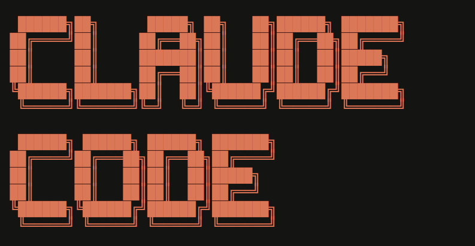

Coding for Non-Coders
No-code tools
Glide Logo
AppSheet Logo
AI coding tools

ChatGPT Logo

Claude Code Logo
Gemini Logo
24-hour Demo

QR Code
Referral App
Referral App
What I used:
- Gemini CLI to program
- TypeScript, React, and Next.js
- Google authentication
- Google Sheets